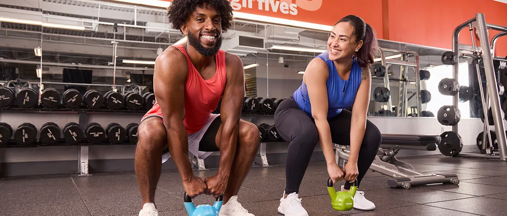
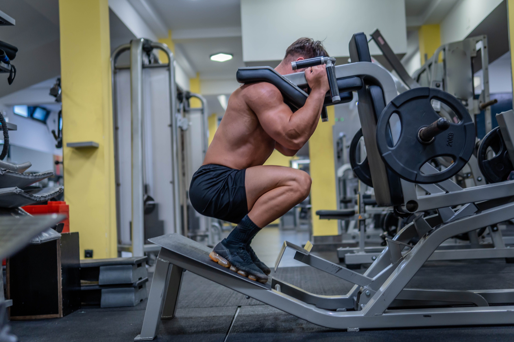

Resistance Exercises
Resistance training (also called strength training or weight training) is the use of resistance to muscular contraction to build strength, anaerobic endurance and size of skeletal muscles.
Exercises and Calories Burned
How to Perform Each Exercise
Free Weights
Free weights are heavy objects that are lifted during exercising (such as dumbbells and barbells) that are not attached to a piece of equipment.

Instructions:
- Select the appropriate weight for your fitness level.
- Stand with your feet shoulder-width apart, holding the weights at your sides.
- Perform the desired exercise (e.g., bicep curls, shoulder press) with controlled movements.
- Maintain good form and avoid swinging the weights.
- Complete 8-12 repetitions per set.
Tips:
- Focus on your form to prevent injury.
- Increase the weight gradually as you build strength.
Back to top
Weight Machines
Weight machines are machines with heavy objects (called weights) attached that is used for exercise.

Instructions:
- Adjust the machine to fit your body size and range of motion.
- Select the appropriate weight for your fitness level.
- Sit or stand in the proper position and grip the handles.
- Perform the exercise with controlled movements, focusing on the target muscle group.
- Complete 8-12 repetitions per set.
Tips:
- Ensure the machine is set up correctly to avoid injury.
- Use smooth, controlled movements and avoid jerking.
Back to top
Back to main page